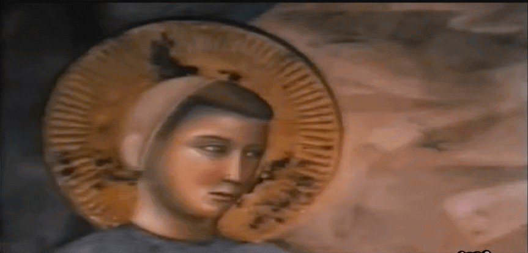
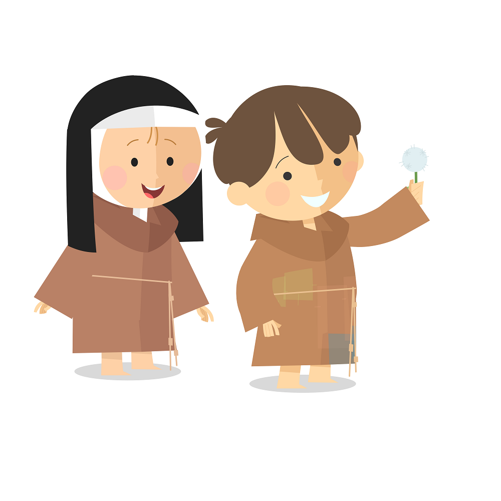
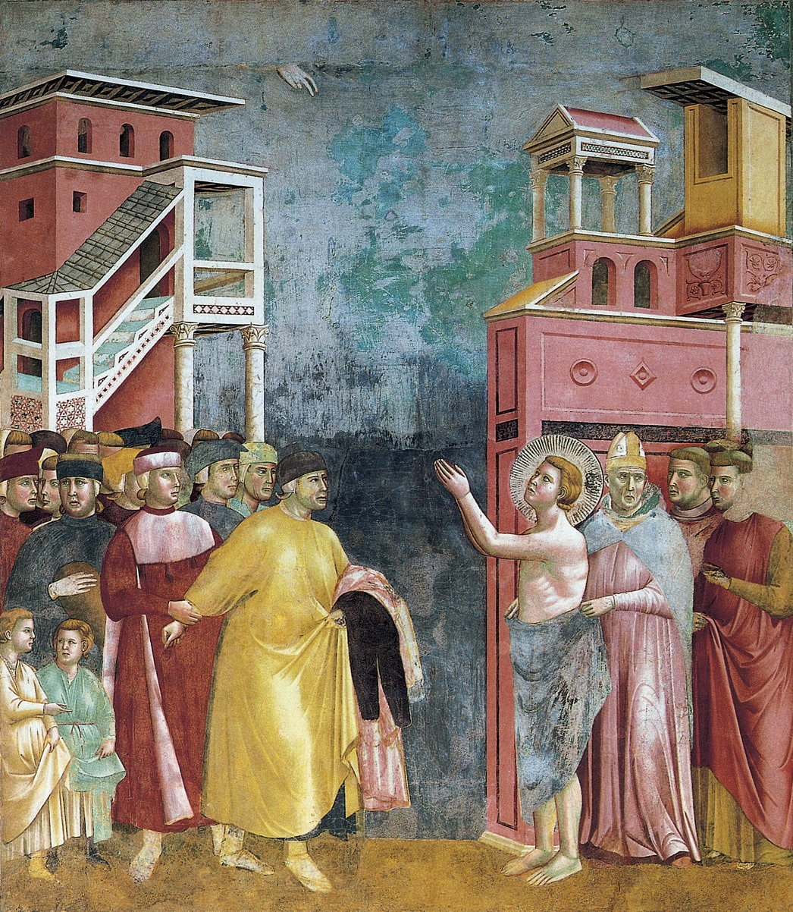
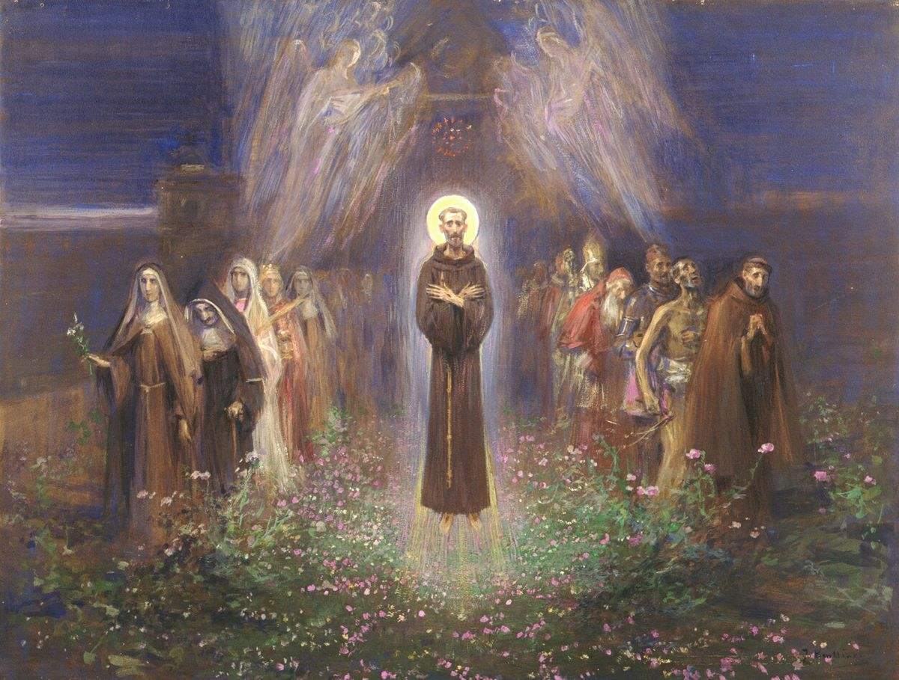
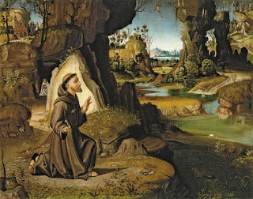
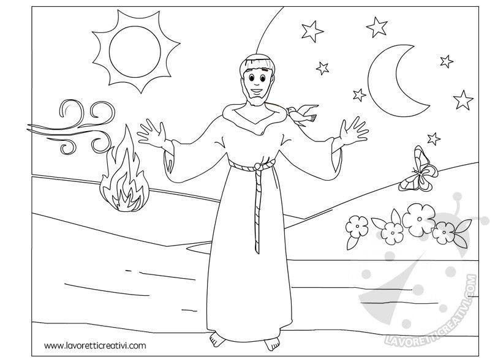
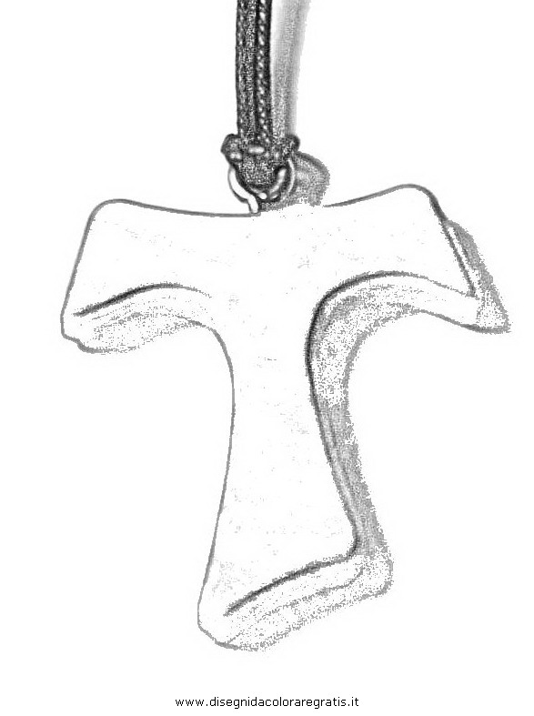
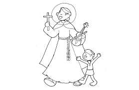
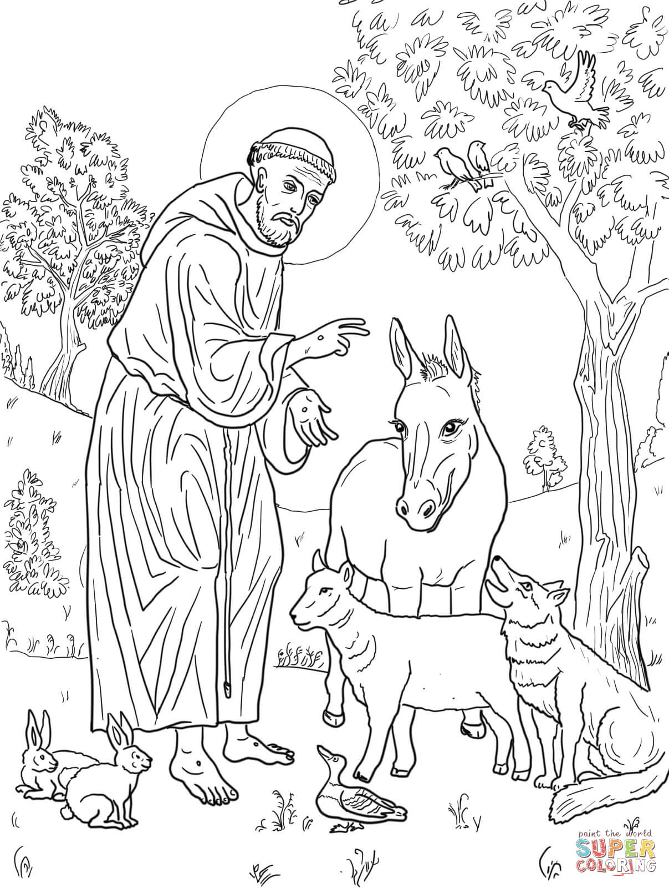

Introducciòn

Giovanni di Pietro di Bernardone, conocido como San Francisco de Asìs (1181-1226) es un santo aliano y fundador de la Orden Franciscana.Durante su juventud llevò una vida mundana. Tras una talla entre Asis y Perugia estuvo encarcelado un año, enfermò y decidiò cambiar su forma de vir. Su vida y enseñanzas han inspirado a millones de personas en todo el mundo.
Infancia

Nacido en Asìs, Italia, el 5 de julio de 1181 o 1182, Francesco creciò en una familia omodada, pero desde joven mostrò una inclinaciòn hacia el servicio a los pobres y necesitados. s padres fueron Madonna Pica de Bourlemont y Pedro de Bernardone.
Conversiòn

Tras un largo periodo de bùsqueda personal y encuentros con la pobreza y la enfermedad, perimentó una profunda transformación espiritual. En uno de sus momentos de oración, Francisco cuchó la voz de Dios que le decía: repara mi iglesia que està en ruinas. Tomando estas palabras pie de la letra, Francisco decidió dedicar su vida a la reconstrucción de las iglesias físicas. n embargo, pronto se dio cuenta de que Dios le estaba llamando a una misión mucho más profunda y gnificativa. San Francisco renunciò a todas sus posesiones y comenzò su vida de servicio a los màs.
Legado

Su legado incluye la fundaciòn de la Orden Franciscana, y sus ensenanzas sobre la pobreza, la mildad y el amor por la creación de Dios, siguen siendo relevantes hoy en dìa.
Amor por la naturaleza

San Francisco de Asìs es el santo patrono de los animales y el medio ambiente. Consideraba a das las criaturas como hermanos y hermanas, y cantaba alabanzas a Dios a través de sus cantos y emas sobre la creación. Es conocido por su famoso Cántico de las criaturas. Su da y enseñanzas han influido en la Iglesia Católica y en muchas otras tradiciones religiosas.
Imàgenes para colorear




Contactanos
Para saber más sobre San Francisco de Asìs o participar en eventos relacionados, llena el mpo con tus datos y seremos felices en ayudarte.